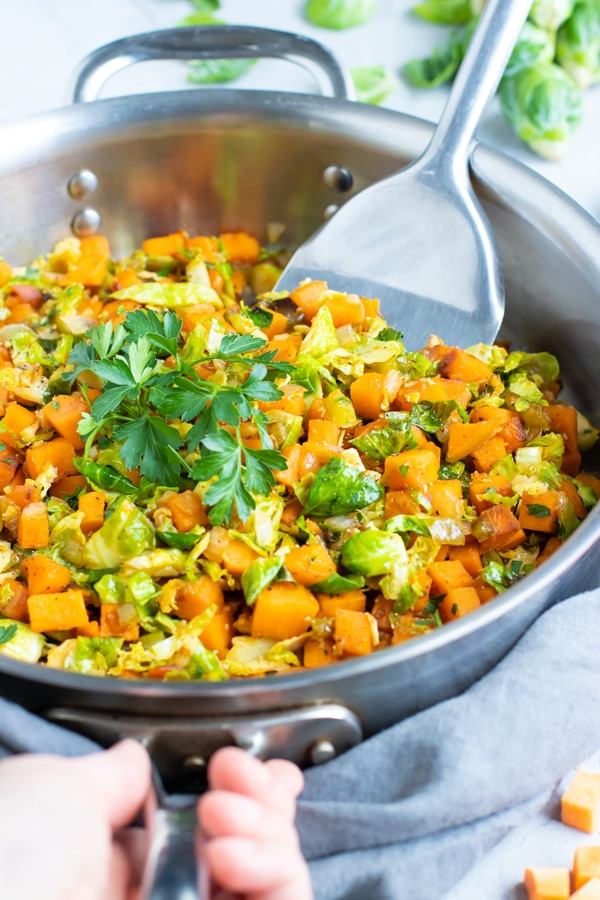

Skillet Brussels Sprouts and Potatoes

A perfect winter side dish, be creative, add bacon, sausages, or replace the potatoes with sweet potatoes
Ingredients
- Potatoes
- Brussels sprouts
- Olive oil
- Salt and pepper to taste
Steps
- Wash the potatoes and brussels sprouts.
- Cut the potatoes and sprout as shown in picture.
- In medium heat, on a heated pan, at the olive oil until shimmering.
- Add potatoes. Sauté for 6-8 minutes.
- Add Brussels sprouts and cook for 3-4 minutes. Bon appetit!